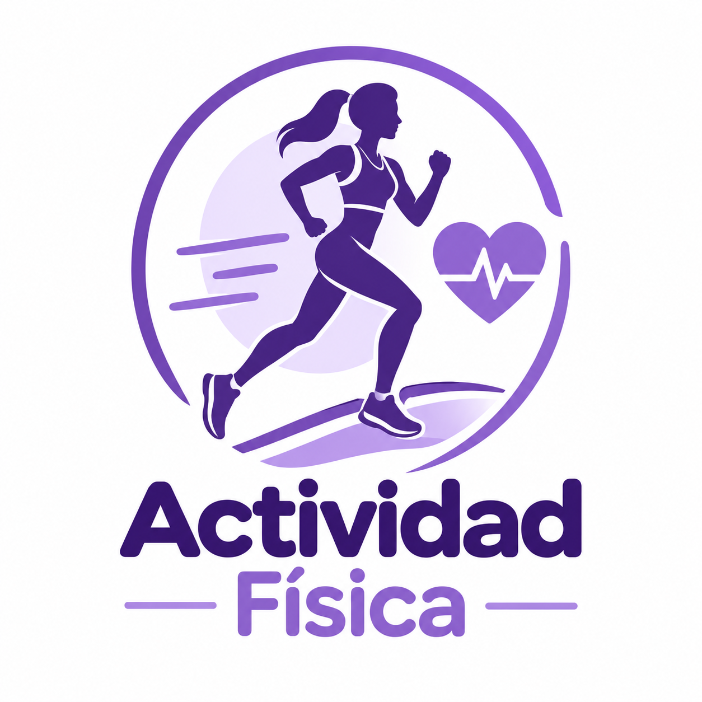
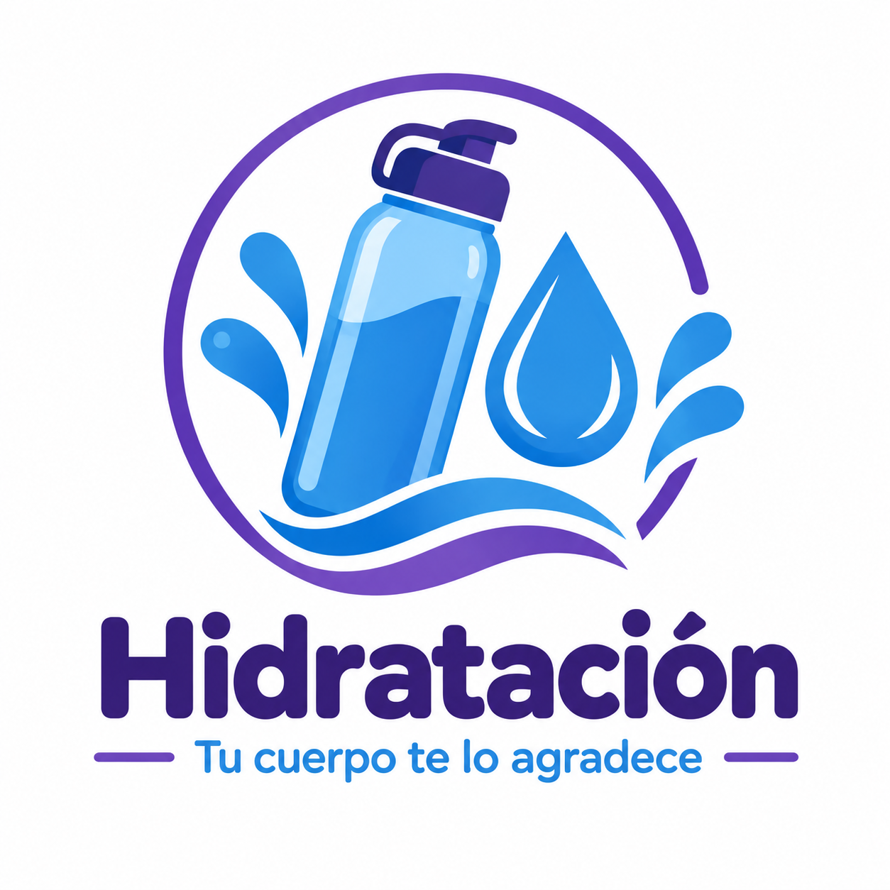
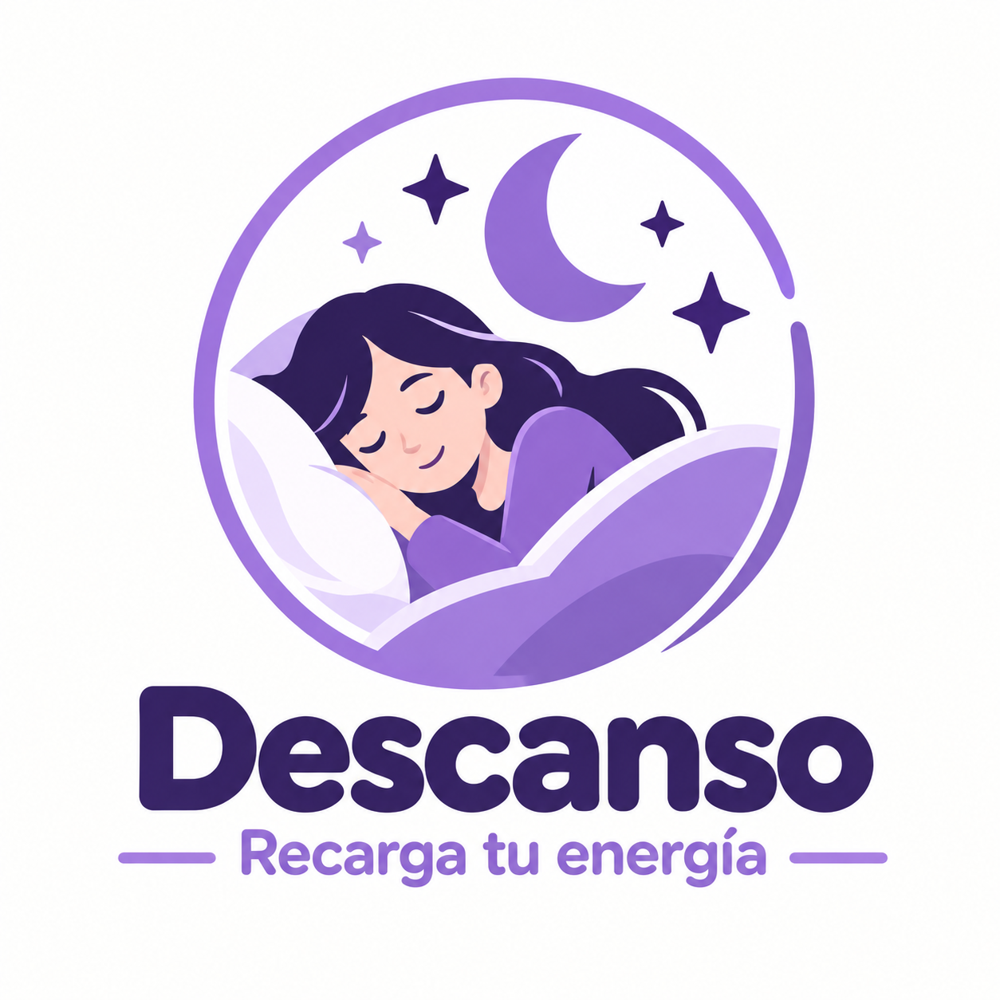

01
Actividad física
Mantenerte activo ayuda a mejorar tu energía, movilidad y bienestar general.
Descubre información sencilla para mejorar tu actividad física, alimentación, hidratación y descanso.
Explorar hábitos
La salud y el bienestar se fortalecen con acciones sencillas que puedes incorporar a tu vida diaria.
Conoce recomendaciones generales para cuidar tu bienestar físico y mental.
Mantenerte activo ayuda a mejorar tu energía, movilidad y bienestar general.

Tomar agua durante el día contribuye al funcionamiento adecuado del organismo.

Dormir y tener momentos de descanso favorece la concentración y la recuperación.

Una alimentación variada proporciona energía y nutrientes importantes para el día.
Elige un hábito, practícalo poco a poco y conviértelo en parte de tu rutina.